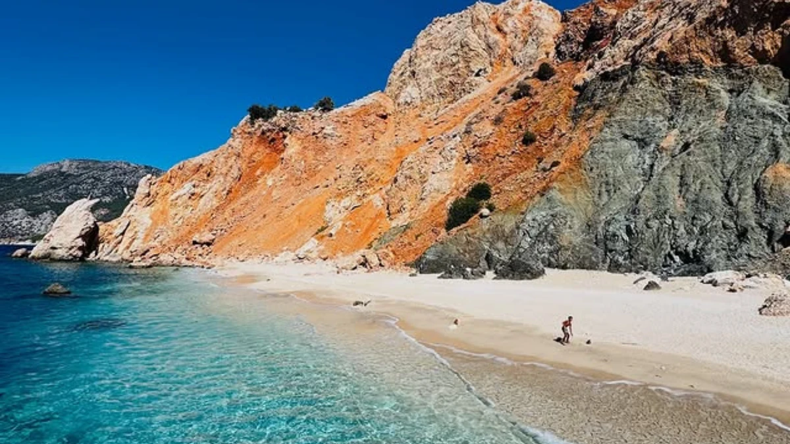

Suluada Tekne Turu
Türkiye'nin Maldivleri olarak anılan Suluada'da beyaz kumlar, turkuaz sular ve şifalı su kaynakları sizi bekliyor. Adrasan Kumluca'dan kalkan teknemizle unutulmaz bir gün. Yaz bitmeden mutlaka deneyin, şiddetle tavsiye ediyorum diyen misafirlerimizin favorisi.
Detayları Gör